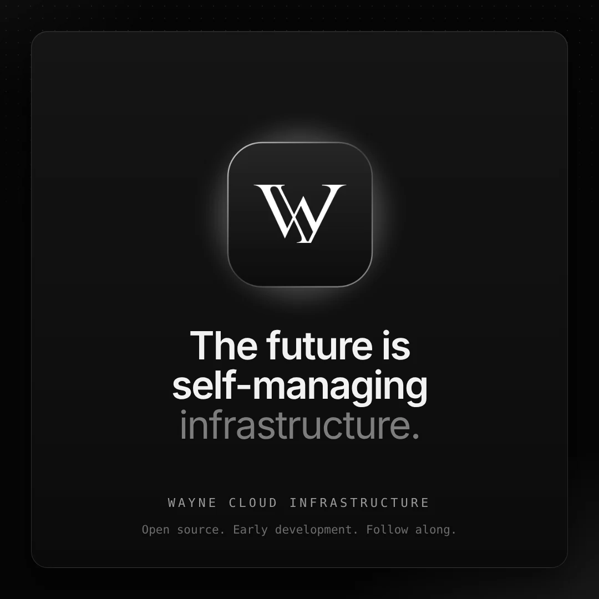
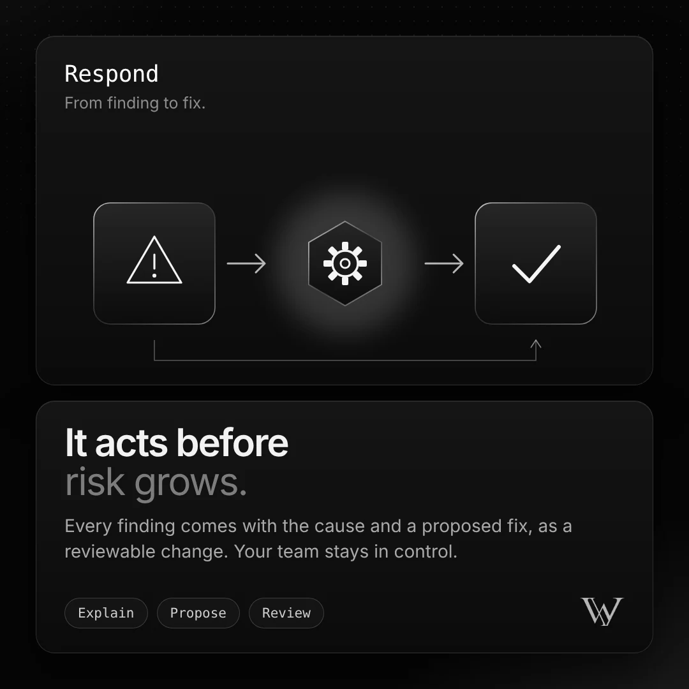

Wayne Cloud Infrastructure
The future is self-managing infrastructure.
Security that detects every change, understands its impact and proposes the fix — on every commit, every deploy and every change.
Wayne Cloud Infrastructure
Security that detects every change, understands its impact and proposes the fix — on every commit, every deploy and every change.

01 / How it works

02 / Detect

03 / Understand

04 / Respond

05 / Continuous
06 / Analysis model
07 / Coverage
08 / Roadmap